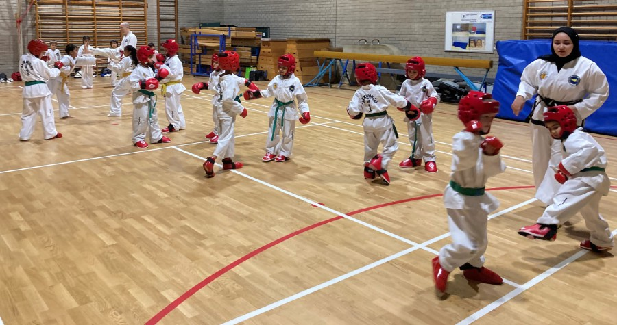
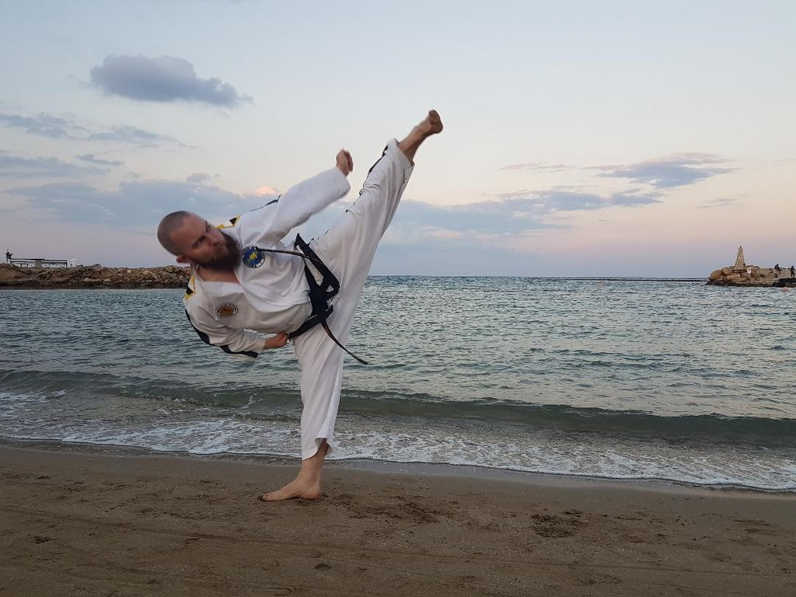
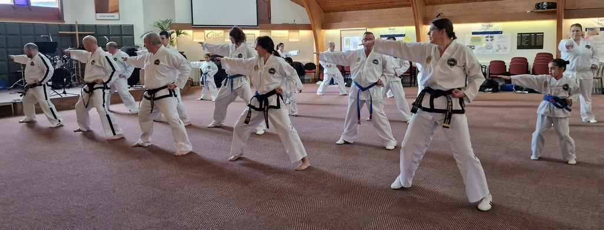

New to Taekwon-Do? Start with a free taster.
Every new student — child or adult — gets a free taster class before joining. Just email, phone, or turn up for a class.
Book your free tasterAberdeenshire & the Borders · ITF Taekwon-Do
Independent Taekwondo Schools is a long-running Taekwon-Do association teaching children and adults at clubs across Aberdeenshire, led by Senior Master Murdoch, 8th Dan Black Belt. Every new student starts with a free taster class.

About the association
Independent Taekwondo Schools runs regular mixed-grade classes for children and adults, with monthly training seminars and grading tests supervised by Senior Master Murdoch, 8th Dan Black Belt. The club's membership is registered with Aberdeenshire ClubSport SCIO for 2024/25, and clubs across the area are currently taking on new students.

Quick look at our clubs
Three of our clubs run a full weekly schedule — see every venue, day and time on the Classes & Locations page.
Seaton Primary School, Oldmachar Academy and Braehead Primary School — mixed classes for all grades, 7pm–8pm.
Peterhead Community Centre — mixed class for all grades, 7pm–8pm.
Full schedule, venue details and how to book a free taster at every club.
Recent achievements
Every training seminar ends with a grading test, and the club's top students take home the Grading Trophy and Grading Shield.
March 2026 training course and grading test: Charles, Alasdair, Nelara and Jenendri all achieved A-level passes in Aberdeen.
— March 2026 grading, AberdeenSeptember grading test winners: Isaac B. (Peterhead Club) took the Grading Trophy, and Charles S. (Aberdeen Club) the Grading Shield.
— September grading testMiss C Welch was promoted to 3rd Dan Black Belt by Senior Master Murdoch, receiving her named embroidered belt.
— Black belt promotion
Every new student — child or adult — gets a free taster class before joining. Just email, phone, or turn up for a class.
Book your free tasterNo need for a uniform on your first visit — just wear something loose and comfy to train in, and the instructors will do the rest.
See class timesEmail the club, leave a message on the phone, or message us on Facebook — we'll get back to you and book your free taster.